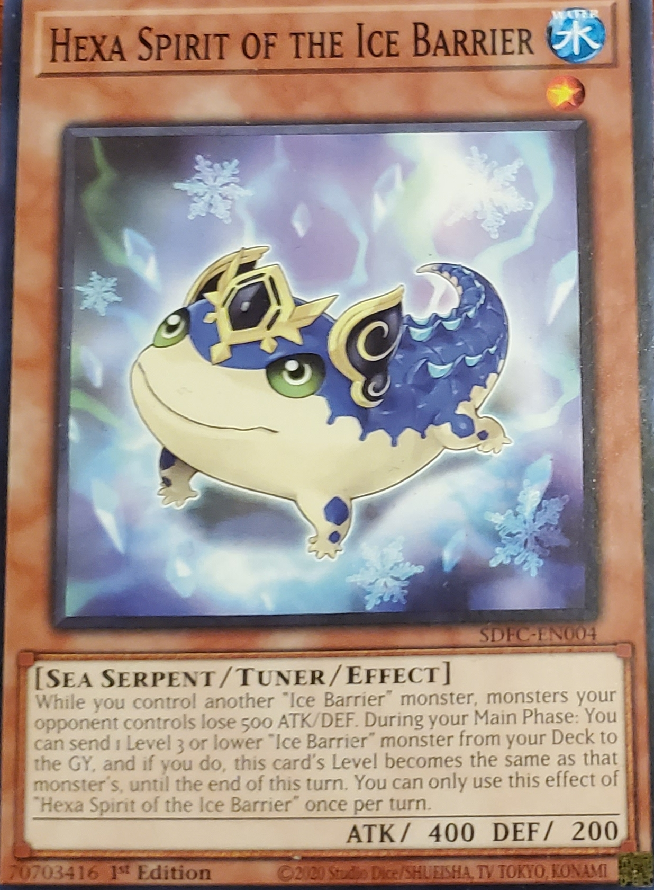

Hexa Spirit of the Ice Barrier
Water
Level: 1
Sea Serpent
Effect/Tuner
Atk/400 Def/200
While you control another "Ice Barrier" monster, monsters your opponent controls lose 500 ATK/DEF. During your Main Phase: You can send 1 Level 3 or lower "Ice Barrier" monster from your Deck to the GY, and if you do, this card's Level becomes the same as that monster's, until the end of this turn. You can only use this effect of "Hexa Spirit of the Ice Barrier" once per turn.